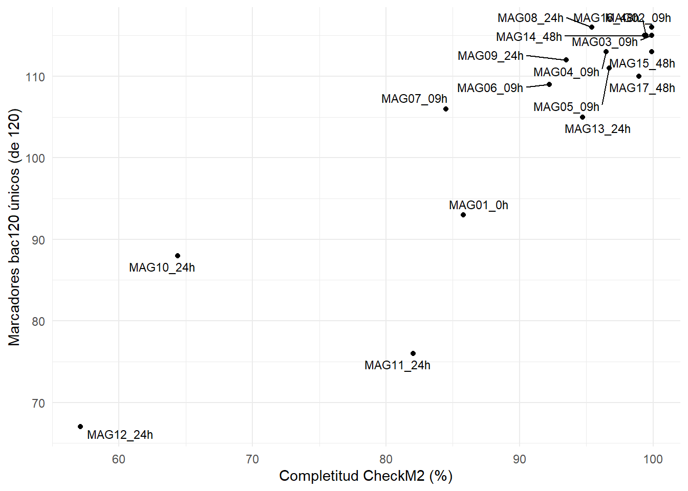
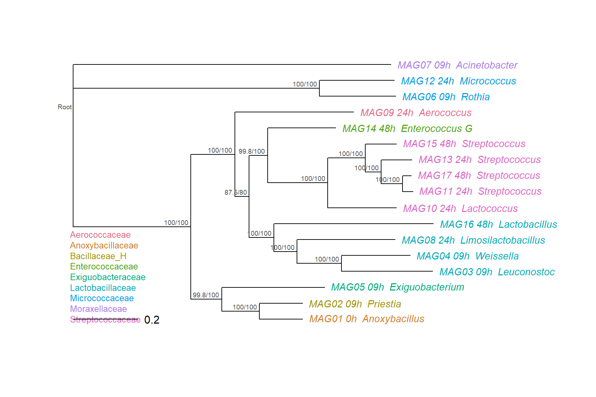

conda activate gtdbtkAsignación
Asignación taxonómica
01. GTDB-tk
GTDB-Tk es una herramienta que asigna taxonomía a genomas utilizando la base de datos GTDB (Genome Taxonomy Database). Basado en árboles filogenéticos y medidas de ANI (Average Nucleotide Identity), GTDB-Tk clasifica genomas bacterianos y arqueanos, proporciona una taxonomía coherente y actualizada. Se utiliza mucho en el análisis de genomas y metagenomas.

Recordemos que ya tenemos un bin refinado y desreplicado. Ahora vamos a asignarle identidad taxonómica, para ello vamos a correr GTDB-tk
Creamos el directorio de resultados para GTDB-tk
mkdir -p results/13.gtdbtk/0h/binsY copiamos con un nuevo nombre
cp results/12.drep/0h/dereplicated_genomes/0h_cleanbin_000001.fasta results/13.gtdbtk/0h/bins/0hBin01.fasta
Script para más de un MAG
Si tienes más de un MAG, que así será en las muestras de mayor tiempo de fermentación, puedes generar un ciclo for para copiar y renombrar todos.
nano src/copiar_renombrarbins.sh#!/usr/bin/bash
destination_dir="results/13.gtdbtk/0h/bins"
count=1
for file in $(ls results/12.drep/0h/dereplicated_genomes/*.fasta); do
new_name=$(printf "0hBin%02d.fasta" "$count")
cp "$file" "$destination_dir/$new_name"
count=$((count + 1))
doneY ahora sí, ejecutamos gtdbtk
conda activate /home/dianao/.conda/envs/gtdbtk_2.5.2export GTDBTK_DATA_PATH=/data/BD/gtdbtk/release_gtdbtk_r226_full
nohup gtdbtk classify_wf \
--genome_dir results/13.gtdbtk/0h/bins/ \
--out_dir results/13.gtdbtk/0h/ \
--cpus 6 \
-x fasta > outs/13.gtdbtk0h.out &02. Filogenómica
La sección anterior termina con una tabla de taxonomía para cada MAG del pozol. Este módulo va un paso más allá: construye un árbol con los mismos genes marcadores que usa GTDB-Tk, lo lee de forma crítica y lo compara con esa taxonomía.
Pregunta guía: ¿qué tan bien concuerda la taxonomía asignada a los MAGs con su filogenia, y cuánta confianza podemos darle a esa comparación?
Objetivos
Al terminar este módulo podrás:
- Explicar qué marcadores usa GTDB-Tk y cuántos recuperó cada MAG.
- Construir un árbol de máxima verosimilitud a partir del alineamiento de marcadores.
- Leer un árbol enraizado: soportes, longitudes de rama y agrupaciones.
- Contrastar la taxonomía de GTDB con los clados del árbol.
- Reconocer los límites de esa inferencia.
Conceptos clave
Marcadores de copia única. GTDB-Tk clasifica a las bacterias con 120 genes marcadores (bac120) que están presentes, en una sola copia, en casi todo el dominio. Son los mismos genes que sirven para construir un árbol. Que un MAG tenga pocos marcadores recuperados no es lo mismo que la completitud que estimó CheckM2 en el binning: CheckM2 usa modelos de aprendizaje automático, no cuenta estos genes.
Alineamiento concatenado. Cada marcador se alinea por separado y los 120 alineamientos se unen en uno solo por genoma. Después se enmascaran las columnas poco informativas (en este catálogo, de 41,084 a 5,036 aminoácidos).
Árbol de máxima verosimilitud. A partir de ese alineamiento, IQ-TREE busca el árbol que hace más probables los datos bajo un modelo de sustitución de aminoácidos. El modelo lo elige el propio programa (ModelFinder).
Soportes. Cada nodo trae dos valores, SH-aLRT y UFBoot, que indican qué tan estable es esa agrupación. Una regla habitual es confiar cuando SH-aLRT ≥ 80 y UFBoot ≥ 95.
Enraizar. Un árbol sin raíz no indica qué linaje divergió primero. Para leerlo en una dirección se elige un grupo externo.
Un dato para la comparación. La taxonomía de GTDB se definió sobre un árbol de genomas construido con estos mismos marcadores.
Práctica
02.1 Insumos necesarios
Partimos de lo que ya produjo el taller:
Los 17 MAGs desreplicados
Tabla de GTDB-Tk
Todo está en tu directorio, dentro de results/19.gtdbtk_global/: la carpeta mags/, gtdbtk.bac120.summary.tsv y quality_report.tsv.
- Ambientes. Esta práctica usa dos ambientes de conda que ya están instalados en el servidor:
gtdbtk(pasos 2 y 3) yqiime2(pasos 4 a 6). El ambienteqiime2también trae R, con los paquetestidyverseyape. En cada paso de terminal se indica cuándo activar y desactivar el ambiente.
02.2 Marcadores: identificación
Vamos a buscar en cada MAG los 120 genes marcadores que GTDB-Tk usa para clasificar. Primero activamos el ambiente de GTDB-Tk:
Y ahora sí, corremos gtdbtk identify:
gtdbtk identify --genome_dir results/19.gtdbtk_global/mags \
-x fasta \
--out_dir results/22.gtdbtk_marcadores \
--cpus 4--genome_dir: carpeta con los genomas-x: extensión de los archivos--out_dir: carpeta de resultados--cpus: hilos
La salida que nos interesa es identify/gtdbtk.bac120.markers_summary.tsv, con una fila por MAG. number_unique_genes cuenta los marcadores encontrados una sola vez y number_multiple_genes los que aparecen con más de una copia.
Para ver las tablas en la terminal (desde ~/reads2mags_pozol), primero la de marcadores. Las columnas son el nombre del MAG, los marcadores únicos y los marcadores con más de una copia:
cut -f1,2,3 results/22.gtdbtk_marcadores/identify/gtdbtk.bac120.markers_summary.tsv | column -tY la calidad de CheckM2: nombre del MAG, completitud y contaminación:
cut -f1,2,3 results/19.gtdbtk_global/quality_report.tsv | column -tUn MAG con pocos de los 120 marcadores aporta poca información al árbol. Para ver cuáles son, comparamos los marcadores únicos de cada MAG con su completitud según CheckM2, que mide algo parecido con otro método. Esta es la gráfica, ya preparada:

Explora:
- ¿Los dos valores van de la mano?
- ¿Qué MAGs quedan lejos del grupo de puntos de arriba a la derecha?
- ¿Hay algún MAG cuya completitud no corresponde a su número de marcadores?
02.3 Alineamiento de marcadores
Ahora alineamos los marcadores y los unimos en un solo alineamiento por genoma:
gtdbtk align --identify_dir results/22.gtdbtk_marcadores \
--out_dir results/22.gtdbtk_marcadores \
--skip_gtdb_refs \
--cpus 4--identify_dir: salida del paso anterior--skip_gtdb_refs: usa solo nuestros 17 MAGs, sin los genomas de referencia de GTDB
GTDB-Tk enmascara las columnas poco informativas: aquí se pasó de 41,084 a 5,036 aminoácidos. El resultado, align/gtdbtk.bac120.user_msa.fasta.gz, es la entrada del árbol.
Ya no necesitamos este ambiente, así que lo desactivamos:
conda deactivate02.4 Árbol de máxima verosimilitud
Para el árbol usamos el ambiente qiime2, que trae IQ-TREE:
conda activate qiime2Descomprimimos el alineamiento:
mkdir -p results/23.iqtree
zcat results/22.gtdbtk_marcadores/align/gtdbtk.bac120.user_msa.fasta.gz > results/23.iqtree/bac120_17mags.faaY ahora sí, construimos el árbol con IQ-TREE:
iqtree3 -s results/23.iqtree/bac120_17mags.faa \
-m MFP \
-B 1000 --alrt 1000 \
-T 4 --seed 123 \
--prefix results/23.iqtree/bac120_17mags-m MFP: ModelFinder elige el modelo de sustitución (aquí, LG+F+I+R3 según BIC)-B 1000: UFBoot con 1000 réplicas--alrt 1000: SH-aLRT-T 4: hilos--seed 123: semilla, para que el resultado sea reproducible--prefix: nombre base de las salidas
Las salidas principales son bac120_17mags.treefile (el árbol con los soportes SH-aLRT/UFBoot en cada nodo) y bac120_17mags.iqtree (el reporte con el modelo y la verosimilitud). Con 4 hilos tarda unos 5 minutos (unos 3 de ellos en ModelFinder).
02.5 Leer y enraizar el árbol
Esta parte se hace en R, con results como directorio de trabajo. Usamos otra vez el ambiente qiime2, que también trae R (si ya lo tienes activo, no pasa nada). Entramos a results y abrimos R:
conda activate qiime2
cd results
RCargamos los paquetes que vamos a usar:
library(tidyverse)Warning: package 'tidyverse' was built under R version 4.4.3Warning: package 'ggplot2' was built under R version 4.4.3Warning: package 'tibble' was built under R version 4.4.3Warning: package 'tidyr' was built under R version 4.4.3Warning: package 'readr' was built under R version 4.4.3Warning: package 'purrr' was built under R version 4.4.3Warning: package 'dplyr' was built under R version 4.4.3Warning: package 'stringr' was built under R version 4.4.3Warning: package 'forcats' was built under R version 4.4.3Warning: package 'lubridate' was built under R version 4.4.3── Attaching core tidyverse packages ──────────────────────── tidyverse 2.0.0 ──
✔ dplyr 1.2.0 ✔ readr 2.1.5
✔ forcats 1.0.0 ✔ stringr 1.5.2
✔ ggplot2 3.5.2 ✔ tibble 3.2.1
✔ lubridate 1.9.4 ✔ tidyr 1.3.1
✔ purrr 1.0.4
── Conflicts ────────────────────────────────────────── tidyverse_conflicts() ──
✖ dplyr::filter() masks stats::filter()
✖ dplyr::lag() masks stats::lag()
ℹ Use the conflicted package (<http://conflicted.r-lib.org/>) to force all conflicts to become errorslibrary(ape)Warning: package 'ape' was built under R version 4.4.3
Adjuntando el paquete: 'ape'
The following object is masked from 'package:dplyr':
whereVamos a leer el árbol en R. IQ-TREE lo entrega sin raíz; para leerlo en una dirección hay que enraizarlo con un grupo externo, y enraizar no es trivial. Aquí usamos MAG07 (Acinetobacter), el único MAG de otro filo (Pseudomonadota), porque es el único candidato claro dentro de este catálogo. En un proyecto propio conviene elegir el grupo externo con cuidado, y no tiene que ser uno de tus MAGs: también puedes buscar un genoma adecuado en bases de datos de genomas y añadirlo al análisis. Otra raíz cambia cómo se dibuja el árbol y quién parece divergir primero, pero las agrupaciones que veremos no cambian mientras la raíz quede fuera de ellas. La opción edgelabel = TRUE mantiene cada soporte en su nodo al enraizar:
tr <- read.tree("09_filogenomica_mags_entrega/23.iqtree/bac120_17mags.treefile")
tr <- root(tr, outgroup = "MAG07_09h", resolve.root = TRUE, edgelabel = TRUE)Ahora leemos la taxonomía de GTDB-Tk y separamos sus niveles:
tax <- read_tsv("09_filogenomica_mags_entrega/19.gtdbtk_global/gtdbtk.bac120.summary.tsv") |>
transmute(Bin_name = user_genome,
Phylum = str_match(classification, "p__([^;]*)")[, 2],
Order = str_match(classification, "o__([^;]*)")[, 2],
Family = str_match(classification, "f__([^;]*)")[, 2],
Genus = str_match(classification, "g__([^;]*)")[, 2])Rows: 17 Columns: 20
── Column specification ────────────────────────────────────────────────────────
Delimiter: "\t"
chr (20): user_genome, classification, closest_genome_reference, closest_gen...
ℹ Use `spec()` to retrieve the full column specification for this data.
ℹ Specify the column types or set `show_col_types = FALSE` to quiet this message.Preparamos las etiquetas (MAG y género) y un color por familia:
tx <- tax[match(tr$tip.label, tax$Bin_name), ]
etiquetas <- paste(tx$Bin_name, tx$Genus, sep = " ")
colores <- setNames(hcl.colors(n_distinct(tx$Family), "Dark 3"), sort(unique(tx$Family)))Y dibujamos el árbol. Los números sobre los nodos son SH-aLRT/UFBoot y la barra de escala indica sustituciones por sitio:
arbol <- tr
arbol$tip.label <- etiquetas
plot(arbol, tip.color = colores[tx$Family], cex = 0.9, label.offset = 0.02)
nodelabels(arbol$node.label, frame = "none", cex = 0.6, adj = c(1.1, -0.4), col = "grey30")
legend("bottomleft", legend = names(colores), text.col = colores, bty = "n", cex = 0.8)
add.scale.bar()
El resultado esperado es el árbol de arriba. En la terminal del servidor no se abre ninguna ventana con la gráfica, así que hay que guardarla en un archivo. Corre el mismo bloque entre png() y dev.off():
png("09_filogenomica_mags_entrega/23.iqtree/arbol.png", width = 900, height = 700)
arbol <- tr
arbol$tip.label <- etiquetas
plot(arbol, tip.color = colores[tx$Family], cex = 0.9, label.offset = 0.02)
nodelabels(arbol$node.label, frame = "none", cex = 0.6, adj = c(1.1, -0.4), col = "grey30")
legend("bottomleft", legend = names(colores), text.col = colores, bty = "n", cex = 0.8)
add.scale.bar()
dev.off()
getwd()El árbol queda guardado como 23.iqtree/arbol.png, dentro de la carpeta donde está trabajando R (results; getwd() te la muestra), junto a los demás archivos de IQ-TREE. Ábrelo desde el explorador de archivos de tu editor o descárgalo a tu computadora para verlo.
Explora: observa qué ramas son largas y qué nodos tienen soporte bajo. ¿Qué cambia si enraizas en otro MAG? Prueba con otro valor de outgroup.
02.6 Taxonomía frente a filogenia
Escribimos una función que, para un nivel taxonómico, revisa si los MAGs de cada grupo forman un clado (is.monophyletic()):
monofiletico <- function(nivel) {
tax |>
group_by(Grupo = .data[[nivel]]) |>
summarise(n_MAGs = n(),
Monofiletico = if (n() > 1) is.monophyletic(tr, Bin_name) else NA,
.groups = "drop") |>
mutate(Nivel = nivel, .before = 1)
}La aplicamos a filo, orden, familia y género, y nos quedamos con los grupos de más de un MAG:
bind_rows(lapply(c("Phylum", "Order", "Family", "Genus"), monofiletico)) |>
filter(n_MAGs > 1)# A tibble: 9 × 4
Nivel Grupo n_MAGs Monofiletico
<chr> <chr> <int> <lgl>
1 Phylum Actinomycetota 2 TRUE
2 Phylum Bacillota 14 TRUE
3 Order Actinomycetales 2 TRUE
4 Order Bacillales 2 TRUE
5 Order Lactobacillales 11 TRUE
6 Family Lactobacillaceae 4 TRUE
7 Family Micrococcaceae 2 TRUE
8 Family Streptococcaceae 5 TRUE
9 Genus Streptococcus 4 TRUE Explora: revisa los soportes de esos grupos en la figura anterior.
Para terminar, salimos de R (si pregunta si guardas la sesión, responde n), volvemos a la raíz del proyecto y desactivamos el ambiente:
q()cd ..
conda deactivate02.7 Límites de la inferencia
- Son 17 genomas recuperados de un solo fermento: el árbol describe a estos MAGs, no a toda la diversidad del pozol.
- No se incluyeron genomas de referencia, así que no vemos cómo se relacionan con otros genomas conocidos.
- Un solo MAG representa a Pseudomonadota, y la raíz del árbol depende de él.
- Un soporte alto indica que la agrupación es estable con estos datos y este modelo, no que sea la historia evolutiva correcta.
- Los MAGs con pocos marcadores recuperados aportan menos señal al árbol, y los contaminados pueden meter ruido. Una forma de comprobarlo es repetir el árbol sin ellos y comparar.
Inputs
Los 17 MAGs (results/19.gtdbtk_global/mags/) y las tablas 19.gtdbtk_global/gtdbtk.bac120.summary.tsv y 19.gtdbtk_global/quality_report.tsv, que ya están en tu directorio.
Outputs
results/22.gtdbtk_marcadores/ (marcadores y alineamiento) y results/23.iqtree/ (árbol y reporte de IQ-TREE).
Preguntas de interpretación
- ¿Qué MAGs recuperaron menos marcadores y qué implica para su lugar en el árbol?
- ¿La taxonomía de GTDB coincide con los clados? ¿Por qué esa coincidencia no es una validación independiente?
- ¿Qué nodo tiene soporte débil y qué conclusión no deberías sacar de él?
Referencias
Chaumeil, P.-A., Mussig, A. J., Hugenholtz, P., & Parks, D. H. (2022). GTDB-Tk v2: memory friendly classification with the Genome Taxonomy Database. Bioinformatics, 38(23), 5315–5316. https://doi.org/10.1093/bioinformatics/btac672
Chklovski, A., Parks, D. H., Woodcroft, B. J., & Tyson, G. W. (2023). CheckM2: a rapid, scalable and accurate tool for assessing microbial genome quality using machine learning. Nature Methods, 20(8), 1203–1212. https://doi.org/10.1038/s41592-023-01940-w
Guindon, S., Dufayard, J.-F., Lefort, V., Anisimova, M., Hordijk, W., & Gascuel, O. (2010). New algorithms and methods to estimate maximum-likelihood phylogenies: Assessing the performance of PhyML 3.0. Systematic Biology, 59(3), 307–321. https://doi.org/10.1093/sysbio/syq010
Hoang, D. T., Chernomor, O., von Haeseler, A., Minh, B. Q., & Vinh, L. S. (2018). UFBoot2: Improving the ultrafast bootstrap approximation. Molecular Biology and Evolution, 35(2), 518–522. https://doi.org/10.1093/molbev/msx281
Kalyaanamoorthy, S., Minh, B. Q., Wong, T. K. F., von Haeseler, A., & Jermiin, L. S. (2017). ModelFinder: fast model selection for accurate phylogenetic estimates. Nature Methods, 14, 587–589. https://doi.org/10.1038/nmeth.4285
Minh, B. Q., Schmidt, H. A., Chernomor, O., Schrempf, D., Woodhams, M. D., von Haeseler, A., & Lanfear, R. (2020). IQ-TREE 2: New models and efficient methods for phylogenetic inference in the genomic era. Molecular Biology and Evolution, 37(5), 1530–1534. https://doi.org/10.1093/molbev/msaa015
Paradis, E., & Schliep, K. (2019). ape 5.0: an environment for modern phylogenetics and evolutionary analyses in R. Bioinformatics, 35, 526–528. https://doi.org/10.1093/bioinformatics/bty633
Parks, D. H., Chaumeil, P.-A., Mussig, A. J., Rinke, C., Chuvochina, M., & Hugenholtz, P. (2025). GTDB release 10: a complete and systematic taxonomy for 715 230 bacterial and 17 245 archaeal genomes. Nucleic Acids Research, 54(D1), D743–D754. https://doi.org/10.1093/nar/gkaf1040
Wong, T. K. F., Ly-Trong, N., Ren, H., Demotte, P., Baños, H., Roger, A. J., Susko, E., Bielow, C., De Maio, N., Goldman, N., et al. (2026). IQ-TREE 3: phylogenomic inference software using complex evolutionary models. Molecular Biology and Evolution, 43(5), msag117. https://doi.org/10.1093/molbev/msag117
Introducción
Un viroma es el conjunto de virus presentes en un ambiente. En un metagenoma, el ADN viral viene mezclado con el de bacterias, arqueas y del hospedador, así que el primer reto es encontrar qué contigs del ensamble son virales.
Hasta ahora trabajamos con MAGs, donde la calidad se evalúa con genes de copia única que casi todas las bacterias comparten. Los virus no tienen un equivalente universal: no existe un gen presente en todos (como el 16S o los marcadores ribosomales), y sus genomas son pequeños, muy variables y poco representados en las bases de datos. Por eso la identificación y la evaluación de calidad se hacen con otras señales.
En este taller trabajaremos con los ensambles de MEGAHIT (v2) del pozol de los cuatro tiempos de fermentación (0, 9, 24 y 48 h) y recuperaremos genomas virales completos o casi completos a partir de contigs individuales.

El flujo de trabajo
Cada paso lee la carpeta del paso anterior y escribe en su propia carpeta numerada dentro de results/. Así, el resultado de un paso es la entrada del siguiente.
Carpeta (results/) |
Lee | Produce |
|---|---|---|
22.virsorter2/ |
03.ensambles/{t}/v2_megahit.fasta |
{t}_virsorter/final-viral-combined.fa |
23.checkv/ |
los cuatro final-viral-combined.fa (juntos) |
out/quality_summary.tsv, out/viruses.fna |
24.vibrant/ |
los dos archivos de 23.checkv/out/ |
phages_combined.{fna,faa} y tablas de calidad |
25.checkv_vibrant/ |
phages_combined.fna |
quality_summary.tsv |
26.votus/ |
phages_combined.fna |
vOTUs_representatives.fna, .clstr, catalogo_vOTUs.tsv |
27.genomad/ |
vOTUs_representatives.fna |
*_taxonomy.tsv, *_proteins.faa |
24.vibrant/ (lectura) |
tablas VIBRANT_AMG_* y VIBRANT_annotations |
paso 28: genes auxiliares del metabolismo |

Tip
Los pasos 23 en adelante trabajan con los cuatro tiempos juntos, para obtener un solo catálogo.
Insumos necesarios
- Ensambles de MEGAHIT v2 de los cuatro tiempos, del proyecto
reads2mags_pozol:results/03.ensambles/{0h,09h,24h,48h}/v2_megahit.fasta. - Bases de datos del servidor: VirSorter2 en
/data/db/virsorter2y geNomad en/data/BD/phage_phylo/genomad_db. - Ambientes de conda: los de la tabla de programas de la sección Preparación.
- Resultados de respaldo (precomputados):
/home/dianao/reads2mags_pozol_resuelto/resuelto_viromas/, con las salidas de los pasos 22 a 27 (results/22.virsorter2aresults/27.genomad).
Preparación
Todos los comandos se ejecutan desde la raíz del proyecto (reads2mags_pozol/). Verifica dónde estás:
pwd
ls results
ls results/03.ensambles/0h/v2_megahit.fasta
Explora
¿Aparecen los directorios 01.fastqc … 21.kofam? ¿Existe results/03.ensambles/0h/v2_megahit.fasta?
Cada herramienta vive en su propio ambiente de conda. Los activaremos por nombre, como en los días anteriores, y los desactivaremos al terminar cada paso.
| Herramienta | Versión | Ambiente |
|---|---|---|
| seqkit | seqkit_env |
|
| VirSorter2 | 2.2.4 | virsorter2 |
| CheckV | 1.0.3 (base v1.5) | checkv |
| VIBRANT | 1.2.0 | vibrant |
CD-HIT (cd-hit-est) |
4.8.1 | EukMS_run |
| geNomad | 1.13.0 (base v1.9) | genomad |
Las cuentas del curso tienen un límite bajo de procesos. Algunos programas de Python intentan abrir un hilo por cada núcleo del servidor y, sin este ajuste, se caen al arrancar. Declaremos los núcleos:
export OPENBLAS_NUM_THREADS=1
export OMP_NUM_THREADS=1
Nota
Estas variables sólo valen en la terminal donde las declaras. Si abres otra terminal, vuelve a declararlas antes de correr cualquier herramienta.
OJO
Antes de correr cada programa, revisa su ayuda (-h) y piensa qué parámetros elegirías para tus datos. Aquí usamos los más sencillos para ahorrar tiempo y recursos.
03.2 Evaluar la calidad
VirSorter2 es sensible: deja pasar candidatos débiles. CheckV los evalúa comparando cada secuencia contra una base de genomas virales de referencia. Estima:
- Completitud, con dos métodos: por similitud de aminoácidos con genomas de referencia y con perfiles HMM de genes virales.
- Contaminación, buscando regiones del hospedador en el contig.
- Genomas completos, detectando repeticiones terminales (señal de genomas completos o circulares).
Con esto clasifica cada secuencia como Complete, High-quality, Medium-quality, Low-quality o Not-determined (cuando no hay referencias suficientes para estimar la completitud), siguiendo el estándar MIUViG.

Este paso trabaja con los cuatro tiempos juntos, para obtener un solo catálogo. Vamos a crear el directorio de resultados:
mkdir -p results/23.checkvLos resultados de los cuatro tiempos del paso anterior deben estar en results/22.virsorter2/. Juntamos los cuatro tiempos, conservamos las secuencias de ≥ 3,000 pb y comprobamos que no haya encabezados repetidos:
conda activate seqkit_env
cat results/22.virsorter2/*_virsorter/final-viral-combined.fa \
| seqkit seq -m 3000 > results/23.checkv/all_viral_3kb.fa
seqkit seq -n -i results/23.checkv/all_viral_3kb.fa | sort | uniq -d | wc -l
conda deactivate
Responde
El último comando debe dar 0. ¿Por qué esperamos cero encabezados repetidos?
Y ahora corramos CheckV:
conda activate checkv
checkv end_to_end results/23.checkv/all_viral_3kb.fa results/23.checkv/out \
-d /data/BD/checkv/db/checkv-db-v1.5 -t 2 2>&1 | tee outs/23.checkv.log
conda deactivate
Atención
Si algo falla, el resultado ya está en /home/dianao/reads2mags_pozol_resuelto/resuelto_viromas/results/23.checkv/out/. Borra la carpeta out de tu proyecto y copia esa:
rm -rf results/23.checkv/out
cp -r /home/dianao/reads2mags_pozol_resuelto/resuelto_viromas/results/23.checkv/out results/23.checkv/Veamos cuántas secuencias hay de cada calidad:
cut -f8 results/23.checkv/out/quality_summary.tsv | sort | uniq -cLa línea checkv_quality es el encabezado de la tabla, no una calidad. El paso produce out/quality_summary.tsv, out/viruses.fna y out/proviruses.fna.
Explora
Abre la tabla con less -S results/23.checkv/out/quality_summary.tsv. Es una tabla con una fila por secuencia. Las columnas clave son:
contig_length: longitud en pb.viral_genesyhost_genes: cuántos genes se reconocieron como virales y como del hospedador.checkv_quality: la clasificación de CheckV (columna 8).miuvig_quality: la clasificación según el estándar MIUViG (columna 9).completenessycompleteness_method: el porcentaje estimado y cómo se calculó.contamination: porcentaje de contaminación.
Por ejemplo, tres filas de la tabla de referencia:
| contig_id | contig_length | checkv_quality | completeness |
|---|---|---|---|
09h_k89_21132\|\|full |
13,320 | Low-quality | 23.55 |
09h_k89_68046\|\|full |
4,424 | Not-determined | NA |
09h_k89_68057\|\|full |
45,786 | High-quality | 95.03 |
Tip
cut -f8,9 results/23.checkv/out/quality_summary.tsv | sort | uniq -c cruza la clasificación de CheckV con la de MIUViG.
En nuestros datos, las 9 secuencias High-quality de CheckV también son High-quality para MIUViG. Todas las demás (5 Medium, 271 Low y 103 Not-determined) quedan como Genome-fragment. Según el estándar, un fragmento de genoma es el que se estima completo en menos de 90 % o no tiene tamaño estimado. Por eso, para decidir qué secuencias conservar, usamos la clasificación de CheckV, que además separa las Medium (50 a 90 %) de las Low (menos de 50 %); la de MIUViG sirve sobre todo para reportar y comparar con otros estudios.

Responde
La mayoría de las secuencias es Low-quality o Not-determined. ¿Qué significa Not-determined: que la secuencia es mala o que no se pudo evaluar? ¿Por qué esperarías muchas en un ambiente como el pozol?
03.3 Validar con una segunda herramienta
Nos quedamos con las secuencias Complete, High-quality y Medium-quality, y las revisamos con VIBRANT. Esta herramienta anota las proteínas contra bases de datos (KEGG, Pfam y VOG) y usa un modelo de aprendizaje automático para decidir si el contig es de un fago. Además, indica si es lítico o lisogénico. VIBRANT también busca genes auxiliares del metabolismo (AMGs); al final del taller, en el paso 28, revisaremos qué encontró.

Vamos a crear el directorio de resultados:
mkdir -p results/24.vibrantPrimero seleccionamos las secuencias de calidad completa, alta o media. En quality_summary.tsv la calidad está en la columna 8:
awk -F'\t' 'NR>1 && ($8=="Complete"||$8=="High-quality"||$8=="Medium-quality"){print $1}' \
results/23.checkv/out/quality_summary.tsv > results/24.vibrant/ids_CHM.txtY extraemos sus secuencias de viruses.fna:
conda activate seqkit_env
seqkit grep -f results/24.vibrant/ids_CHM.txt results/23.checkv/out/viruses.fna \
> results/24.vibrant/input_CHM.fna
grep -c ">" results/24.vibrant/input_CHM.fna
conda deactivate
Responde
¿Cuántas secuencias entraron a VIBRANT? Compara con la tabla de calidad del paso anterior: ¿cuántas hay de calidad completa, alta y media?
Y ahora sí, corramos VIBRANT:
conda activate vibrant
cd results/24.vibrant
VIBRANT_run.py -i input_CHM.fna \
-d /data/BD/vibrant/db/vibrant_db_2026-01-30_020448/databases \
-m /data/env/vibrant/share/vibrant-1.2.0/files \
-folder $(pwd) -t 2 2>&1 | tee ../../outs/24.vibrant.log
cd ../..
conda deactivate
Atención
Si algo falla, el resultado ya está en /home/dianao/reads2mags_pozol_resuelto/resuelto_viromas/results/24.vibrant/. Borra tu carpeta y copia esa:
rm -rf results/24.vibrant
cp -r /home/dianao/reads2mags_pozol_resuelto/resuelto_viromas/results/24.vibrant results/VIBRANT deja muchos archivos intermedios en la carpeta. Los resultados útiles quedan en VIBRANT_input_CHM/: las secuencias y proteínas en VIBRANT_phages_input_CHM/ y las tablas en VIBRANT_results_input_CHM/.
En esta corrida ninguna de las secuencias seleccionadas era provirus, así que todas salen de viruses.fna. Si hubiera provirus, hay que tomarlos de proviruses.fna, que lleva coordenadas en el encabezado.
Cuenta cuántas secuencias confirmó VIBRANT y cuántas son líticas o lisogénicas:
F=results/24.vibrant/VIBRANT_input_CHM/VIBRANT_phages_input_CHM
grep -c ">" ${F}/input_CHM.phages_combined.fna
grep -c ">" ${F}/input_CHM.phages_lytic.fna ${F}/input_CHM.phages_lysogenic.fna
Ayuda
ls results/24.vibrant/VIBRANT_input_CHM/less -S results/24.vibrant/VIBRANT_input_CHM/VIBRANT_results_input_CHM/VIBRANT_genome_quality_input_CHM.tsv
Responde
¿Por qué usar dos herramientas con criterios distintos (VirSorter2 y VIBRANT) y una tercera de calidad (CheckV)? ¿Qué ganas y qué pierdes si una secuencia corta de alta calidad es descartada por un filtro?
03.4 Revalidar con CheckV
Corremos CheckV otra vez sobre lo que confirmó VIBRANT, para comprobar que la calidad no cambió.
conda activate checkv
checkv end_to_end \
results/24.vibrant/VIBRANT_input_CHM/VIBRANT_phages_input_CHM/input_CHM.phages_combined.fna \
results/25.checkv_vibrant \
-d /data/BD/checkv/db/checkv-db-v1.5 -t 2 2>&1 | tee outs/25.checkv_vibrant.log
conda deactivate
Atención
Si algo falla, el resultado ya está en /home/dianao/reads2mags_pozol_resuelto/resuelto_viromas/results/25.checkv_vibrant/. Borra tu carpeta y copia esa:
rm -rf results/25.checkv_vibrant
cp -r /home/dianao/reads2mags_pozol_resuelto/resuelto_viromas/results/25.checkv_vibrant results/Veamos la calidad que asignó CheckV esta vez. Las columnas 1, 2, 8 y 9 son el nombre, la longitud, la calidad de CheckV y la de MIUViG:
cut -f1,2,8,9 results/25.checkv_vibrant/quality_summary.tsv
Responde
Compara esta tabla con la del paso 23 para las mismas secuencias. ¿Cambió la calidad de alguna?
03.5 Catálogo no redundante: los vOTUs
El mismo virus puede aparecer en varias muestras o tiempos. Para no contarlo dos veces, agrupamos las secuencias parecidas en vOTUs (unidades taxonómicas operacionales virales). El criterio MIUViG es 95 % de identidad sobre al menos 85 % de la longitud de la secuencia más corta. Usamos CD-HIT-EST con esos parámetros y nos quedamos con un representante por grupo.

Vamos a crear el directorio de resultados y a copiar las secuencias que confirmó VIBRANT, que son nuestras candidatas:
mkdir -p results/26.votus
cp results/24.vibrant/VIBRANT_input_CHM/VIBRANT_phages_input_CHM/input_CHM.phages_combined.fna \
results/26.votus/candidatos.fna
Explora
Antes de correr CD-HIT-EST, revisa su ayuda con cd-hit-est -h (activa primero el ambiente EukMS_run). ¿Qué hacen las opciones -c, -aS, -n y -M? ¿Cuáles corresponden al criterio MIUViG?
Y ahora sí, corramos CD-HIT-EST:
conda activate EukMS_run
cd-hit-est -i results/26.votus/candidatos.fna \
-o results/26.votus/vOTUs_representatives.fna \
-c 0.95 -aS 0.85 -M 0 -T 2 -n 10 2>&1 | tee outs/26.cdhit.log
conda deactivateCD-HIT-EST deja un archivo .clstr con los grupos. Vamos a convertirlo en una tabla legible: qué secuencia pertenece a qué vOTU y cuál es su representante:
awk 'BEGIN{print "secuencia\tvOTU\trol"}
/^>Cluster/{cl=$2; next}
{n=$3; sub(/^>/,"",n); sub(/\.\.\..*/,"",n);
print n"\tvOTU_"cl"\t"($0 ~ /\*$/ ? "representante" : "miembro")}' \
results/26.votus/vOTUs_representatives.fna.clstr > results/26.votus/catalogo_vOTUs.tsv
cat results/26.votus/catalogo_vOTUs.tsvEl paso produce vOTUs_representatives.fna, el archivo .clstr con los grupos y catalogo_vOTUs.tsv.


Responde
Revisa en catalogo_vOTUs.tsv las filas con rol miembro: ¿cuántos vOTUs agrupan secuencias de más de un tiempo? ¿Significa que los demás virus aparecen en un solo tiempo? ¿Qué te falta para saberlo?
03.6 Clasificar taxonómicamente
geNomad asigna una taxonomía (siguiendo el ICTV) a cada vOTU. Predice los genes y busca, para cada uno, marcadores virales con taxonomía conocida; luego combina la información de todos los genes del contig. La columna agreement indica qué tan consistentes son las asignaciones entre genes, y n_genes_with_taxonomy, cuántos genes la respaldan.

geNomad usa bastante memoria (alrededor de 5.6 GiB de RAM). La opción --splits 4 reparte la búsqueda en partes para gastar menos memoria. Lánzalo:
conda activate genomad
genomad annotate results/26.votus/vOTUs_representatives.fna \
results/27.genomad /data/BD/phage_phylo/genomad_db \
--threads 4 --splits 4 2>&1 | tee outs/27.genomad.log
conda deactivate
Atención
El resultado ya está corrido. Borra tu carpeta y copia el del respaldo:
rm -rf results/27.genomad
cp -r /home/dianao/reads2mags_pozol_resuelto/resuelto_viromas/results/27.genomad results/El paso produce *_taxonomy.tsv, *_genes.tsv y *_proteins.faa. Veamos la taxonomía que asignó a cada vOTU:
cat results/27.genomad/*_annotate/*_taxonomy.tsv
Explora
¿A qué clase pertenecen los 12 vOTUs? ¿Alguno tiene asignación de orden o de familia? Fíjate en n_genes_with_taxonomy: ¿qué vOTUs tienen pocos genes con taxonomía?
Responde
¿Qué dice sobre el ambiente que ningún vOTU baje de la clase?
03.7 Genes auxiliares del metabolismo
Un gen auxiliar del metabolismo (AMG) es un gen viral que se parece a un gen metabólico del hospedador. Al expresarlo durante la infección, el virus puede modificar el metabolismo de la célula a su favor. VIBRANT los busca al mismo tiempo que anota las proteínas, así que no hay nada que correr: sólo leeremos las tablas del paso 24.
Para no escribir la ruta larga cada vez, guárdala en una variable:
R=results/24.vibrant/VIBRANT_input_CHM/VIBRANT_results_input_CHM
ls $RLas tablas VIBRANT_AMG_* son las que reportan los AMGs. Cuenta sus líneas (la primera es el encabezado):
wc -l $R/VIBRANT_AMG_*.tsv
Explora
¿Cuántas líneas tiene cada tabla? ¿Qué significa que sólo tengan el encabezado?
En nuestros datos las tres tablas sólo tienen el encabezado: VIBRANT no encontró AMGs en los 13 fagos. Veamos qué sí hay en sus genes. La tabla VIBRANT_annotations tiene una fila por gen; la columna 3 es el KO de KEGG, la 4 marca los AMGs y la 5 es el nombre de la función:
wc -l $R/VIBRANT_annotations_input_CHM.tsv
awk -F'\t' 'NR>1 && $3!="" {n++} END{print n" genes con KO"}' $R/VIBRANT_annotations_input_CHM.tsv
cut -f4 $R/VIBRANT_annotations_input_CHM.tsv | sort | uniq -cAhora cuenta cuántas veces aparece cada función y mira las más frecuentes:
awk -F'\t' 'NR>1 && $3!="" {print $3 "\t" $5}' $R/VIBRANT_annotations_input_CHM.tsv \
| sort | uniq -c | sort -k1,1nr | head -20
Nota
La línea con el valor AMG en el conteo de la columna 4 es el encabezado; los demás genes (608) tienen esa columna vacía.
Responde
Las funciones más frecuentes son replicación del ADN, terminasas, integrasa y lisis. ¿Por qué la integrasa es coherente con que haya 3 fagos lisogénicos? ¿Por qué podría no haber AMGs en estos 13 genomas?
Resultados de referencia
Lo que obtuvimos en nuestra corrida
Compara con tus resultados:
| Etapa | Resultado |
|---|---|
| Contigs de ≥ 3 kb que analiza VirSorter2 (0 / 9 / 24 / 48 h) | 154 / 2,697 / 3,186 / 1,904 (total 7,941) |
| Virales según VirSorter2 | 15 / 159 / 157 / 99 (total 430) |
| …con al menos un gen hallmark | 5 / 53 / 57 / 36 (total 151) |
| Virales ≥ 3 kb antes de CheckV | 388 |
| CheckV | 0 Complete, 9 High, 5 Medium, 271 Low, 103 Not-determined |
| Entran a VIBRANT (calidad completa, alta o media) | 14 |
| Confirmadas por VIBRANT | 13 (10 líticas, 3 lisogénicas) |
| vOTUs (CD-HIT-EST) | 12 |
| Taxonomía (geNomad) | 12 de 12 Caudoviricetes |
| AMGs (VIBRANT) | 0; 76 de 608 genes con función KEGG, casi todos de maquinaria viral |
Las 13 secuencias confirmadas se reparten así por tiempo: 0 h, 1; 9 h, 3; 24 h, 7; 48 h, 2. La única fusión del catálogo agrupa 0h_k89_13161 con 09h_k89_68057 (96.91 % de identidad).
Tarea
Ejercicio
Responde por tu cuenta (puedes comentarlo con tus compañeros):
- De 7,941 contigs ≥ 3 kb sobreviven 12 vOTUs de calidad alta o media. ¿Qué filtro explica la mayor pérdida y qué implica para lo que sabemos del viroma del pozol?
- Tres secuencias miden exactamente 45,786 pb (a las 9, 24 y 48 h) y no se agruparon entre sí. Propón explicaciones posibles y cómo las comprobarías. (Pregunta abierta: no se comprobó.)
- Para responder cómo cambia el viroma durante la fermentación, ¿bastaría con contar vOTUs por tiempo? ¿Qué análisis adicional harías con las lecturas?
- ¿Qué límites tiene trabajar con contigs virales sin binning y con bases de datos sesgadas hacia otros ambientes?
Referencias
- Guo et al. 2021. VirSorter2. Microbiome.
- Nayfach et al. 2021. CheckV. Nature Biotechnology.
- Kieft et al. 2020. VIBRANT. Microbiome.
- Fu et al. 2012. CD-HIT. Bioinformatics.
- Camargo et al. 2023. geNomad. Nature Biotechnology.
- Roux et al. 2019. MIUViG. Nature Biotechnology.